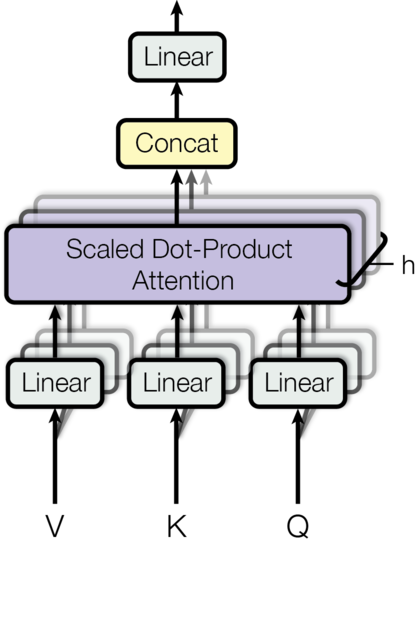
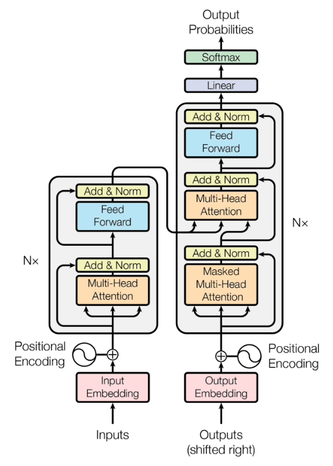
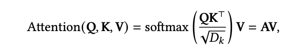

트랜스포머는 Attention 매커니즘이 적용된 멋진 딥러닝 모델이에요. 2017년에 구글이 발표한 “Attention is all you need” 논문에서 처음 소개되었죠. 이 모델은 RNN(1986)과 LSTM(1997) 같은 Recurrent 모델을 대체할 수 있는 대안으로 등장했어요. 트랜스포머는 자연어 처리와 같은 다양한 분야에서 성공을 거두었고, 그 인기는 계속해서 높아지고 있어요. GPT는 Transformer의 디코더 아키텍처를 활용하고 있고, BERT는 Transformer의 인코더 아키텍처를 활용하고 있습니다.
이 모델은 RNN 방식이 아닌 Attention 메커니즘을 더욱 효과적으로 활용하여 입력 시퀀스의 각 요소 간의 관계를 파악하고 중요한 정보에 집중할 수 있게 되었어요. RNN과 LSTM은 이전 정보를 순차적으로 처리하는 반면, 트랜스포머는 모든 입력을 한 번에 고려하면서 처리하기 때문에 계산이 더 효율적이에요. 이를 위해 Attention 메커니즘을 사용하는데, 이는 입력의 다른 부분 간의 관계를 학습하여 중요한 정보에 집중하고 필요한 부분에 더 많은 가중치를 부여하는 방식이에요. 트랜스포머는 이러한 장점으로 인해 자연어 처리, 컴퓨터 비전, 음성 처리 등 여러 분야에서 큰 성과를 거두었고, 많은 사람들의 관심을 받고 있어요. 이 모델은 과거의 기존 모델들을 대체할 수 있는 혁신적인 대안이 되었고, 딥러닝의 발전을 이끄는 중요한 역할을 하고 있어요. 트랜스포머는 딥러닝의 한 종류로, 기계 번역, 자연어 이해, 자연어 생성 등 다양한 자연어 처리 작업에 사용됩니다.
Attention is all you need
트랜스포머는 자연어 처리를 위한 딥러닝 모델로, 2017년 구글에서 발표된 "Attention is all you need"라는 논문에서 처음 등장했어요. 이 모델은 RNN, CNN과 LSTM 같은 Recurrent 모델을 대체할 수 있는 대안으로 등장했답니다. 그래서 트랜스포머는 “앗, RNN이야? 잘 가라! 나에게 자연어 처리 임무를 맡겨줘!“라고 말하며 열심히 일하고 있어요.
트랜스포머는 자연어 처리뿐만 아니라 컴퓨터 비전과 오디오 처리 같은 다양한 분야에서도 성공을 거두고 있는데요. 이제는 트랜스포머가 너무 유명해져서 “트랜스포머 스타!“라는 칭호를 받고 있어요. 그리고 최근에는 트랜스포머의 변형 모델들이 많이 등장하고 있는데, 이제는 트랜스포머 패밀리가 점점 커가고 있다고 할 수 있어요. 가족이 늘어나니까 트랜스포머 가족들 사이에선 서로 경쟁도 하고 어떤 모델이 더 멋지냐고 싸움도 벌이고 있답니다!
트랜스포머 모델 개발
트랜서포머 모델을 개발하는 세가지 관점이 존재합니다.
- 모델 효율성: 모델 효율성은 트랜스포머 모델의 계산과 메모리 복잡도를 개선하는 것을 의미해요. 이를 위해 트랜스포머에서는 “셀프 Attention"이라는 모듈을 사용합니다. 이 모듈은 문장 내의 단어들 사이의 상호작용을 효율적으로 처리하는 방법을 제공해요. 셀프 Attention은 단어들 사이의 관계를 파악하여 중요한 정보를 강조하고, 계산량을 줄이는 효과가 있어요. 이렇게 함으로써 트랜스포머는 더 빠르게 작동하고, 더 많은 데이터를 처리할 수 있게 되는 거죠.
- 모델 일반화: 모델 일반화는 트랜스포머 모델이 소규모 데이터에 대해 학습하는 것이 어렵다는 문제를 다루는 관점입니다. 이를 해결하기 위해 트랜스포머는 사전 훈련 방법과 레이블이 없는 대규모 데이터에 대해 미리 학습하는 전처리 단계를 거치는 방법을 사용합니다. 이렇게 사전 훈련된 모델은 더 적은 데이터로도 일반화된 결과를 얻을 수 있게 도와줍니다. 소규모 데이터에 대한 의존도가 줄어들고, 보다 다양한 작업에 적용할 수 있게 되는 거죠.
- 모델 적용: 모델 적용은 트랜스포머를 하위 도메인인 특정 작업에 적용하는 관점입니다. 트랜스포머는 다양한 분야에서 사용될 수 있으며, 특정 작업에 효과적으로 적용하기 위해 모델을 조정합니다. 예를 들어, 자연어 처리 작업이나 컴퓨터 비전 작업과 같은 하위 도메인에 트랜스포머를 적용하여 해당 분야에서 좋은 성능을 발휘할 수 있도록 하죠. 이렇게 하위 도메인에 트랜스포머를 적용함으로써 더 나은 결과를 얻을 수 있게 됩니다.
이렇게 쉽게 설명하면, 트랜스포머 모델은 더 효율적으로 계산하고, 적은 데이터로도 일반화된 결과를 얻을 수 있으며, 다양한 분야에 적용할 수 있는 모델이라고 할 수 있어요. 그래서 트랜스포머는 딥러닝의 슈퍼스타로 떠오르고 있는 거죠!
트랜스포머 구조
트랜스포머 네트워크는 크게 두 가지 주요한 컴포넌트로 구성됩니다: 인코더(encoder)와 디코더(decoder)입니다. 각각의 컴포넌트는 다시 여러 개의 하위 레이어로 구성되어 있습니다. 이들을 순차적으로 적용함으로써 텍스트 처리를 수행합니다.
인코더(Encoder): 인코더는 입력 문장을 벡터 형태로 변환하는 역할을 합니다. 이 벡터는 입력 문장의 의미와 구조를 포착한 추상적인 표현입니다.
-
Input Embedding: 인코더의 입력 임베딩은 원시 입력 문장의 각 단어를 벡터로 변환하는 역할을 합니다. 이 임베딩은 단어의 의미와 특징을 포착하여 모델이 문장을 이해할 수 있도록 돕습니다.
-
Positional Encoding: 위치 정보를 인코딩하는 방식으로, 인코더의 입력 시퀀스 내 단어의 상대적인 위치를 표현합니다. 이를 통해 인코더는 단어의 순서 정보를 활용할 수 있습니다.
- RNN을 사용하지 않게 되면 위치 정보를 별도로 주어야 합니다. 이를 위해서 Input Embedding Matrix와 동일한 차원인 Positional Encoding에 대한 것을, Element Wise(+)로 더해 Multi-Head Attention에 넣어주도록 합니다.
-
Multi-Head Attention: 다수의
Attention헤드를 사용하여 입력 시퀀스 내 단어들 간의 상호작용을 모델링합니다. 각 헤드는 서로 다른 관점으로 입력 벡터들 간의 관계를 표현하고, 결과를 결합하여 최종 Attention 출력을 생성합니다. 이를 통해 인코더는 입력 문장의 의미를 파악하고, 중요한 정보를 추출합니다. -
Add & Norm: Attention 결과에 Residual Connection과 정규화를 적용하는 과정입니다. Residual Connection은 Attention 결과와 이전 레이어의 입력을 더하는 것을 의미하며, 정규화는 입력 벡터의 평균과 표준편차를 사용하여 벡터를 정규화(normalization)합니다. 이를 통해 인코더는 정보의 손실 없이 신경망의 깊이를 늘릴 수 있고, 학습의 안정성을 도모합니다.
-
Feed Forward: 다층 퍼셉트론으로 구성된 신경망입니다. 이 신경망은 Attention 결과를 입력으로 받아 각 단어 벡터에 대한 비선형 변환을 수행합니다. 이를 통해 인코더는 입력 문장의 특징을 추상화하고, 다양한 특성을 학습합니다.
-
Add & Norm: Attention 결과에 Residual Connection과 정규화를 적용하는 과정입니다. Residual Connection은 Attention 결과와 이전 레이어의 입력을 더하는 것을 의미하며, 정규화는 입력 벡터의 평균과 표준편차를 사용하여 벡터를 정규화합니다. 이를 통해 인코더는 정보의 손실 없이 신경망의 깊이를 늘릴 수 있고, 학습의 안정성을 도모합니다.
위의 과정을 Layer 1이라고 가정하면, Layer 1의 출력은 다시 Layer 2의 입력으로 들어가고, Layer 2의 출력은 다시 Layer 3의 입력으로 들어가는 방식으로 여러 개의 레이어를 반복 수행합니다. 이렇게 인코더의 마지막 출력 값을 매번 디코더의 레이어에 입력으로 전달함으로써 각 레이어는 이전 레이어의 출력을 참조할 수 있게 되고, 최종적으로 입력과 동일한 차원의 출력을 얻을 수 있습니다. 이러한 방식으로 디코더는 인코더의 정보를 계속해서 활용하면서 문장을 생성하게 됩니다.
-
디코더(Decoder): 디코더는 인코더가 생성한 벡터를 기반으로 출력 문장을 생성하는 역할을 합니다. 디코더는 하나의 레이어에서 두 가지 어텐션을 사용합니다. 예를 들어,"Today is a holiday."라는 문장을 번역할 때,"holiday"라는 단어를 생성하기 위해"오늘은 휴일이다."와 어떤 단어들이 연관되는지를 찾아야 하므로 Attention을 수행해야합니다.예를 들어, 디코더 레이어를 N번 반복하여 문장을 생성한다고 가정해보겠습니다. 이는 디코더가 N개의 레이어로 구성된다는 의미입니다. 디코더는 이러한 레이어를 반복하면서 이전 레이어에서 얻은 정보를 활용하여 점차 문장을 생성해나갑니다. 각 레이어는 인코더가 생성한 벡터와 이전 디코더 레이어의 출력을 입력으로 받고, 어텐션과 FFN(feed-forward network) 등의 연산을 수행하고, 이러한 디코더 레이어를 N번 반복하여 최종적으로 문장을 생성합니다. 이렇게 디코더는 인코더로부터 전달받은 정보와 이전 레이어의 출력을 활용하여 단어 단위로 번역을 진행하며, 반복적으로 레이어를 통과함으로써 문장을 완성시킵니다. 이러한 다중 레이어 구조를 통해 디코더는 번역 작업을 수행하고 복잡한 문장 생성을 가능하게 합니다.
-
Output Embedding: 디코더의 출력 임베딩은 이전 타임스텝에서 생성한 단어를 임베딩하는 역할을 합니다. 이 임베딩은 다음 단어를 예측하는 데 사용됩니다. 이때, 디코더에서 “타임 스텝"은 문장을 생성하는 과정에서의 시간 단위를 나타냅니다. 디코더는 한 번에 한 단어씩 생성하며, 각 단어의 생성은 하나의 타임 스텝으로 간주됩니다. 타임 스텝은 문장을 구성하는 단어의 순서에 따라 진행되며, 이전 타임 스텝에서 생성한 단어를 기반으로 다음 타임 스텝에서 새로운 단어를 생성하는 방식으로 문장이 완성됩니다. 디코더의 각 레이어는 이러한 타임 스텝별로 단어를 생성하고, 반복하여 문장을 완성시킵니다. 따라서 디코더의 타임 스텝은 문장 생성 과정에서의 단계적인 진행을 의미합니다.
-
Positional Encoding: 디코더에서 Positional Encoding을 하는 이유는 입력 문장의 단어 순서 정보를 모델에 제공하기 위해서입니다. 트랜스포머 모델은 단어의 위치 정보를 고려하지 않는 어텐션 메커니즘을 사용하기 때문에, 단어의 상대적인 위치를 알려주는 역할을 하는 Positional Encoding이 필요합니다. Positional Encoding은 각 단어의 임베딩 벡터에 위치 정보를 더해줌으로써 단어의 순서를 명시적으로 표현합니다. 일반적으로 사인 함수와 코사인 함수를 사용하여 각 위치에 대한 고유한 값을 생성합니다. 이렇게 생성된 Positional Encoding은 단어 임베딩과 합쳐져 디코더의 입력으로 사용됩니다. 위치 정보를 인코딩하는 방식으로, 디코더의 입력 시퀀스 내 단어의 상대적인 위치를 표현합니다. 이를 통해 디코더는 단어의 순서 정보를 활용할 수 있습니다.
-
Masked Multi-Head Attention: 디코더에서 Masked Multi-Head Attention을 사용하는 이유는 문장을 생성하는 동안 현재 시점 이후의 단어에 대한 정보에 접근하지 못하도록 하여, 모델이 미래의 정보를 사용하지 않고 현재까지 생성된 부분에만 집중하도록 제한하기 위함입니다. 이를 통해 디코더는 자기 회귀적인 특성을 유지하면서 문장을 단어 단위로 순차적으로 생성할 수 있습니다. Masked Multi-Head Attention은 디코더의 각 타임 스텝에서 적용되는 어텐션 메커니즘입니다. 일반적으로 디코더의 현재 위치 이후에 있는 단어들에 대한 어텐션 가중치를 0으로 만들어주는 마스킹(masking)을 적용합니다. 이렇게 마스킹된 어텐션 메커니즘은 현재까지 생성된 문장에만 집중하면서 다음 단어를 예측하는 데에만 관여하게 됩니다. 마스킹된 어텐션을 사용함으로써 디코더는 미래의 단어에 대한 정보를 참고하지 않고 문장을 생성하게 됩니다. 이는 실제 문제에서는 현재 시점 이후에 있는 단어들을 알 수 없는 경우가 많기 때문에 유용합니다. 디코더가 미래의 정보를 이용하게 되면, 학습과정에서 지나치게 낙관적인 예측을 할 수 있고, 실제 예측 과정에서의 오류가 발생할 수 있습니다. 따라서 디코더에서 Masked Multi-Head Attention을 사용하여 현재까지 생성된 문장에만 집중하고, 순차적으로 문장을 생성하도록 관리함으로써 모델의 안정성과 정확성을 향상시킬 수 있습니다. 디코더 내 현재 위치 이전의 출력에만 집중할 수 있도록 하는 Attention 메커니즘입니다. 이를 통해 디코더는 다음 단어를 예측하는 과정에서 미래의 정보를 참조하지 않습니다.
-
Add & Norm: 디코더에서 Add & Norm은 각 디코더 레이어의 출력에 residual connection을 적용한 후 레이어 정규화(layer normalization)를 수행하는 과정입니다. 이 과정은 디코더에서 정보의 흐름과 그라디언트의 전파를 개선하기 위해 사용됩니다. Add & Norm의 주요 목적은 레이어 간의 정보 흐름을 원활하게 만들어 학습을 안정화시키는 것입니다. residual connection은 입력과 출력을 더함으로써 모델이 어떠한 변화도 가하지 않을 경우에도 기존의 정보를 유지할 수 있게 합니다. 이는 네트워크가 깊어질수록 그라디언트 소실(vanishing gradient) 문제를 완화시키고, 모델의 학습이 더욱 수월하게 이루어지도록 도와줍니다. 레이어 정규화는 각 레이어의 출력을 평균과 분산을 기준으로 정규화하여 학습의 안정성을 높입니다. 이를 통해 입력 데이터의 분포를 일정하게 유지하고, 다른 레이어 간의 스케일 차이를 조절하여 학습의 속도와 안정성을 개선합니다. 따라서 Add & Norm은 디코더에서 residual connection과 레이어 정규화를 결합하여, 정보의 흐름을 유지하고 그라디언트를 안정적으로 전파함으로써 디코더의 학습을 효과적으로 돕는 역할을 합니다.
-
Multi-Head Attention: 다수의 Attention 헤드를 사용하여 다양한 관점에서 정보를 수집합니다. 각 헤드는 서로 다른 관점으로 입력 벡터들 간의 상호작용을 모델링하고, 결과를 결합하여 최종 출력을 생성합니다. 디코더에서
Multi-Head Attention을 사용하는 이유는 다양한 관점에서 입력 시퀀스의 정보를 캡처하고, 모델의 성능을 향상시키기 위함입니다.병렬 처리: Multi-Head Attention은 입력 시퀀스의 다양한 관점을 동시에 고려할 수 있습니다. 각 어텐션 헤드는 서로 다른 가중치를 학습하여 다른 부분에 집중할 수 있습니다. 이는 병렬 처리를 가능하게 하여 학습 속도를 높이고, 모델의 효율성을 향상시킵니다.- 다양한 관점 캡처:
Multi-Head Attention은 여러 개의 어텐션 헤드를 통해 다양한 관점에서 입력 시퀀스의 정보를 캡처할 수 있습니다. 각 어텐션 헤드는 서로 다른 가중치를 학습하며, 각각 다른 셀프 어텐션을 수행합니다. 이를 통해 모델은 입력 시퀀스의 다양한 특징이나 관계를 학습할 수 있어 문맥 파악이 더욱 풍부해지고, 번역, 요약, 질문 답변 등의 다양한 자연어 처리 작업에서 더욱 정확한 결과를 얻을 수 있습니다. - 정보 결합: 각 어텐션 헤드의 출력은 연결(concatenation) 또는 평균화(average) 등의 방식을 통해 결합됩니다. 이를 통해 다양한 관점에서 얻은 정보를 효과적으로 결합하여 디코더의 출력을 생성합니다. 이러한 정보 결합은 모델이 입력 시퀀스의 다양한 특징을 포착하고, 이를 효과적으로 활용할 수 있도록 돕습니다.
따라서 Multi-Head Attention은 디코더에서 다양한 관점의 정보를 동시에 캡처하고 결합하여 모델의 성능을 향상시키는 역할을 합니다. 이를 통해 디코더는 더욱 정확하고 유연한 출력을 생성할 수 있습니다.

-
Feed Forward: 다층 퍼셉트론으로 구성된 신경망입니다. 이 신경망은 Attention 결과를 입력으로 받아 각 단어 벡터에 대한 비선형 변환을 수행합니다. 디코더에서의 “Feed Forward"는 어텐션 메커니즘 이후에 적용되는 전방향 신경망입니다. 이 신경망은 두 개의 선형 변환과 활성화 함수로 구성되어 있습니다. Feed Forward의 역할은 다음과 같습니다.
- 비선형성 추가: Feed Forward는 비선형 활성화 함수를 포함하고 있어 비선형성을 도입합니다. 이를 통해 모델은 더 복잡한 함수를 학습할 수 있게 됩니다. 선형 변환 이후에 비선형 활성화 함수를 적용함으로써, 디코더는 입력 시퀀스의 특징을 더 잘 추출하고 복잡한 문제를 해결할 수 있습니다.
- 차원 축소: Feed Forward는 출력 차원을 줄이는 역할을 수행합니다. 일반적으로 입력과 출력의 차원은 같지만, Feed Forward를 통과한 후의 출력 차원은 작아집니다. 이는 모델의 계산 효율성을 향상시키고, 파라미터의 수를 줄이는 데 도움을 줍니다.
- 특성 병합: Feed Forward의 출력은 이전 단계의 어텐션 출력과 원래의 입력을 합칩니다. 이를 통해 모델은 어텐션 출력과 입력 시퀀스의 정보를 결합하며, 이를 토대로 최종 출력을 생성합니다. Feed Forward를 통해 다양한 관점에서 추출된 특성들이 합쳐지므로, 디코더는 더 의미 있는 정보를 활용하여 문맥에 맞는 출력을 생성할 수 있습니다.
Feed Forward는 디코더에서 중요한 구성 요소로, 비선형성 추가, 차원 축소, 특성 병합 등의 역할을 수행합니다. 이를 통해 디코더는 입력 시퀀스의 특징을 추출하고, 적절한 출력을 생성하는 데 도움을 줍니다.
-
Linear, Softmax: 선형 변환과 소프트맥스 함수를 통해 최종 예측을 수행합니다. 선형 변환은 FFN의 출력을 선형적으로 변환하고, 소프트맥스 함수는 확률 분포를 생성하여 다음 단어를 선택합니다. 디코더에서 “Linear” 및 “Softmax"는 출력을 생성하기 위해 사용되는 두 가지 연산입니다.
- Linear: 디코더의 마지막 레이어인 Feed Forward의 출력은 선형 변환을 통해 다음 단계로 전달됩니다. Linear 연산은 입력에 대한 선형 변환을 수행하며, 이는 출력 공간의 차원을 조정하는 역할을 합니다. 즉, 선형 변환을 통해 출력의 크기 및 형태를 조정하여 최종 예측을 위한 적절한 형태로 만들어줍니다.
- Softmax: 디코더의 마지막 레이어에서는 Softmax 함수가 적용됩니다. Softmax 함수는 다중 클래스 분류 문제에서 사용되며, 출력을 확률 분포로 변환합니다. 디코더의 출력은 다음 단어에 대한 확률 분포로 해석됩니다. Softmax 함수는 모델이 다음 단어를 선택하는 데 도움을 주며, 각 단어의 중요도를 정규화하여 정확한 예측을 도출하는 데 사용됩니다.
따라서 “Linear"은 출력 공간의 차원 조정을 수행하고, “Softmax"는 출력을 확률 분포로 변환하여 다음 단어 예측에 사용됩니다. 이 두 연산은 디코더의 최종 출력을 형태적으로 조정하고 확률적인 의미를 부여하는 데 중요한 역할을 합니다.
-
이러한 구성 요소들을 조합하여 디코더는 입력 시퀀스를 이해하고 다음 단어를 예측하며, 효과적인 번역 또는 생성 작업을 수행합니다. 이러한 인코더와 디코더를 조합하여 트랜스포머 네트워크를 구성하며, 이를 통해 자연어 처리 작업을 수행합니다.

트랜스포머 모델 배경
-
Vanilla Transformer
-
Vanilla Transformer은 인코더와 디코더로 구성되며, 각각의 레이어는 셀프 Attention(self-attention)과 포지션-와이즈 피드 포워드 네트워크(position-wise feed-forward network)로 구성됩니다. 인코더는 입력 시퀀스를 임베딩하고, 여러 개의 인코더 레이어를 통해 입력의 특징을 추출하여 인코딩합니다. 디코더는 인코더의 출력과 이전 스텝의 출력을 입력으로 받아 다음 출력을 생성하는 역할을 수행합니다.
이 모델은 주요한 특징으로는 셀프 Attention 메커니즘을 사용하여 문장 내 단어 간의 관계를 모델링하는 능력을 갖추고 있습니다. 또한, 입력 시퀀스의 길이에 상관없이 전체 문장을 한 번에 처리할 수 있는 장점이 있어 장거리 종속성(long-range dependencies)을 모델링하는 데에도 유용합니다.
Vanilla Transformer는 이후 다양한 변형이 나오면서 성능이 개선되었고, 이를 바탕으로 다양한 응용 분야에서 활용되고 있습니다. BERT, GPT, BART 등 다양한 변형 모델들은 Vanilla Transformer를 기반으로 하여 발전되었으며, 각각의 모델은 특정한 사전 학습 방법이나 아키텍처 변형을 도입하여 성능을 향상시킨 것입니다.
-
-
시퀀스 투 시퀀스 모델은 인코더와 디코더로 구성됩니다.
- 각 인코더 블록은 멀티 헤드 셀프 Attention 모듈과 포지션-와이즈 피드 포워드 네트워크(FFN:position-wise feed-forward network)로 구성되어 있습니다.
- 인코더는 입력 시퀀스를 임베딩(embedding)하고, 멀티 헤드 셀프 Attention 모듈을 통해 입력 시퀀스 내의 각 위치들 간의 상호 의존성을 파악합니다. 멀티 헤드 셀프 Attention 모듈은 입력 시퀀스의 각 위치에서 다른 위치들과의 관계를 계산하여 중요한 정보를 추출합니다.
- 이후, 포지션-와이즈 피드 포워드 네트워크는 각 위치의 정보를 개별적으로 처리하는데 사용됩니다. 이 네트워크는 두 개의 선형 변환과 활성화 함수를 포함하며, 입력 시퀀스의 각 위치에서 독립적으로 작동합니다.
- 인코더 블록은 이러한 멀티 헤드 셀프 Attention 모듈과 포지션-와이즈 피드 포워드 네트워크를 반복하여 스택 형태로 구성됩니다. 이렇게 구성된 인코더는 입력 시퀀스의 정보를 추상화하고, 상위 레이어로 전달하여 디코더가 출력 시퀀스를 생성하는 데에 활용됩니다.
- 디코더도 비슷한 구조를 가지지만, 추가적으로 마스크드 멀티 헤드 Attention 모듈이 사용됩니다. 이 모듈은 디코더의 각 위치에서 이전 위치들에만 집중하여 정보를 참조하도록 제한합니다. 이렇게 함으로써 디코더는 이후의 위치에 대한 정보를 참조하지 않고, 자기 회귀적인 방식으로 출력 시퀀스를 생성할 수 있습니다.
- 이와 같은 구조를 가진 시퀀스 투 시퀀스 모델은 자연어 처리, 기계 번역 등 다양한 작업에 활용되며, 트랜스포머 모델은 이러한 모델 구조의 핵심 요소를 담고 있습니다.
-
Attention 모듈
-
트랜스포머에서 사용되는 Attention 모듈은 쿼리-키-밸류(QKV) 모델입니다. 이 모델은 Attention 메커니즘의 핵심 요소로 사용되며, 입력 시퀀스 내의 단어들 간의 상호 작용을 모델링하는 데에 중요한 역할을 합니다.

-
QKV 모델은 세 가지 주요 요소로 구성됩니다. 첫째, 쿼리(Query)는 현재 위치에서 주목하고자 하는 정보를 나타내며, 주로 인코더나 디코더의 입력 시퀀스의 단어에 대응됩니다. 둘째, 키(Key)는 입력 시퀀스 내의 다른 단어들과의 관계를 나타내는 정보를 담고 있습니다. 마지막으로, 밸류(Value)는 키와 관련된 실제 값이며, 주로 Attention 가중치를 계산하는 데 사용됩니다.
-
Attention 메커니즘은 쿼리와 키 사이의 유사도를 계산하고, 이를 바탕으로 밸류와 가중합을 계산합니다. 즉, 쿼리와 키 간의 관련성을 계산하여 해당 단어에 얼마나 주목해야 하는지를 결정하는 것입니다. 이를 통해 입력 시퀀스 내의 각 단어들 간의 상호 작용과 관계를 모델링할 수 있습니다.
-
트랜스포머에서는 QKV 모델을 사용하여 멀티 헤드 Attention(multi-head attention)을 구현합니다. 멀티 헤드 Attention은 여러 개의 Attention 서브모듈로 구성되어 있으며, 각 서브모듈은 독립적인 쿼리, 키, 밸류 세트를 가지고 작동합니다. 이를 통해 모델이 여러 가지 다양한 관점에서 입력 시퀀스를 인코딩하고, 다양한 종류의 정보를 캡처할 수 있습니다.
-
쿼리-키-밸류(QKV) 모델은 트랜스포머의 핵심적인 요소 중 하나로서, 입력 시퀀스의 단어들 간의 관계를 모델링하는 데에 핵심적인 역할을 합니다. 이를 통해 트랜스포머는 다양한 자연어 처리 작업에 적용될 수 있으며, 기계 번역, 문장 생성, 질의 응답 등 다양한 응용 분야에서 성공적으로 활용되고 있습니다.
-
-
트랜스포머는 싱글 Attention 함수(single attention function) 대신에 멀티 헤드 Attention(multi-head attention)을 이용합니다.
-
각 서브모듈은 입력으로 주어진 쿼리, 키, 밸류에 대해 Attention 가중치를 계산합니다. 이후, 각 Attention 가중치와 해당 밸류를 가중합하여 멀티 헤드 Attention의 출력을 생성합니다. 이 과정을 여러 번 반복하고, 서브모듈들의 출력을 연결(concatenate)하여 최종 멀티 헤드 Attention의 출력을 얻습니다.
멀티 헤드 Attention은 모델이 입력 시퀀스 내의 다양한 관점과 특징을 동시에 캡처할 수 있도록 합니다. 각 서브모듈은 서로 다른 셀프 Attention 가중치를 학습하도록 되어 있으며, 이를 통해 다양한 표현력을 가진 Attention을 구성할 수 있습니다. 이는 모델이 입력 시퀀스의 다양한 요소와 관계를 동시에 고려하고, 병렬적으로 처리할 수 있게 합니다.
멀티 헤드 Attention은 트랜스포머의 핵심적인 구성 요소로서, 모델이 다양한 관점과 특징을 동시에 고려하여 입력 시퀀스를 처리하고 인코딩하는 데에 큰 역할을 합니다. 이를 통해 트랜스포머는 다양한 자연어 처리 작업에서 뛰어난 성능을 발휘하며, 모델의 표현력과 학습 능력을 향상시킵니다.
-
-
모델 사용 관점에서, 트랜스포머 아키텍처는 세 가지 관점에서 사용됩니다.- 기계번역에서 시퀀스 투 시퀀스 모델링(sequence-to-sequence modeling) 사용됩니다.
- 인코더만 사용 : 입력 시퀀스를 출력 용으로 사용할 수 있다. 분류 또는 시퀀스 라벨링 문제에 사용됩니다.
- 디코더만 사용 : 언어 모델링의 시퀀스 생성에 사용됩니다.
모델 복잡도
트랜스포머 모델은 시간과 파라미터 개수로 성능을 설명하는데, 중요한 두 가지 요소가 있어요. 첫 번째는 셀프 Attention 모듈인데, 이 모듈은 자기 자신과의 관계를 주목해요. 셀프 Attention 모듈이 많으면 모델 계산 시간이 길어지고, 파라미터 개수도 많아져요. 그래서 입력 시퀀스가 짧으면 셀프 Attention의 복잡도가 올라가는 거죠.
두 번째는 포지션 와이즈 FFN(position-wise FFN) 모듈이에요. 이 모듈은 각 위치에서 독립적으로 작용해요. 입력 시퀀스가 길어지면 FFN 모듈의 병목 현상이 발생할 수 있어요. 그래서 입력 시퀀스가 길면 FFN 모듈을 통과하는 시간이 오래 걸릴 수 있어요.
요약하자면, 트랜스포머 모델은 입력 시퀀스의 길이에 따라 셀프 Attention과 FFN의 성능이 달라져요. 짧은 시퀀스일수록 셀프 Attention 복잡도가 올라가고, 긴 시퀀스일수록 FFN 모듈이 병목 현상을 일으킬 수 있어요. 그러니까 입력 시퀀스가 중요하다는 거죠! 물론, 이걸 말하려면 제 머리가 조금 더 셀프 Attention을 필요로 할 것 같아요!
네트워크 타입
셀프 Attention은 가변적인 입력 길이를 처리하는 데에 유용한 매커니즘입니다. 셀프 Attention은 일반적으로 셀프 Attention, 풀리 커넥티드, 컨볼루셔널, 리커런트의 네 가지 유형으로 분류됩니다.
-
셀프 Attention은 입력 시퀀스 내의 다른 위치들 간의 상호 의존성을 파악하는 방식입니다. 이를 통해 모델은 입력 시퀀스의 어느 부분에 집중해야 하는지를 학습할 수 있습니다.
-
셀프 Attention의 이점은 다음과 같습니다. 첫째, 장거리 의존성 모델링에 적합합니다. 최대 경로 길이가 동일한 풀리 커넥티드 레이어를 사용하는 경우와는 달리, 셀프 Attention은 가변적인 경로 길이를 처리할 수 있습니다.
둘째, 컨볼루셔널 레이어는 수용 영역에 제한이 있어 깊은 네트워크를 쌓아야 합니다. 그러나 셀프 Attention은 입력 시퀀스의 최대 경로 길이가 일정한 경우, 레이어 수를 고정하여 장거리 의존성을 모델링할 수 있습니다.
셋째, 연속 연산과 최대 경로 길이가 있는 경우, 셀프 Attention은 리커런트 레이어보다 장거리 모델링에 더 유리합니다.
셀프 Attention은 다양한 입력 길이에 유연하게 대응할 수 있는 장점을 가지고 있으며, 트랜스포머 모델에서 중요한 역할을 수행합니다
-
-
풀리 커넥티드 방식은 입력 시퀀스 내의 모든 위치를 전부 연결하는 방식입니다. 이는 장거리 의존성을 모델링하는 데에 적합하지만, 계산 비용이 많이 들고 깊은 네트워크를 쌓아야 하는 단점이 있습니다.
-
컨볼루셔널 방식은 입력 시퀀스를 윈도우로 슬라이딩하여 연산하는 방식입니다. 하지만 이 방식은 수용 영역에 제한이 있기 때문에 장거리 의존성을 모델링하는 데에는 한계가 있습니다.
-
리커런트 방식은 이전 상태를 이용하여 현재 상태를 계산하는 방식입니다. 그러나 연산이 순차적으로 이루어져야 하기 때문에 계산 속도가 느릴 수 있습니다.
모델을 보는 네가지 관점
트랜스포머 모델은 다양한 종류가 있지만, 여기서는 바닐라 트랜스포머를 기초로 삼아서 설명해볼게요. 이 모델을 보는 네 가지 관점이 있어요.
- 모델 관점 (Model Perspective): 이 관점에서는 Attention, 포지셔닝 인코딩, 레이어 정규화(LayerNorm), FFN(Feed-Forward Network)과 같은 구성 요소들을 중심으로 모델을 이해합니다. 이들은 트랜스포머의 핵심 구성 요소로서 입력과 출력 간의 상호작용을 조정하고 정보 처리를 담당합니다.
- 아키텍처 레벨 관점 (Architecture Level): 이 관점에서는 모델의 경량화(lightweight), 연결성(connectivity), 분할 정복(divide-and-conquer)과 같은 특성들을 고려합니다. 경량화는 모델의 계산 및 메모리 요구 사항을 줄이는 데 초점을 맞춥니다. 연결성은 네트워크 내의 구성 요소들 간의 연결 방식을 고려하여 모델의 전체적인 흐름을 조정합니다. 분할 정복은 모델을 여러 부분으로 나누어 처리함으로써 계산 복잡도를 줄이고 효율성을 향상시킵니다.
- 사전 학습 방법 (Pre-train Perspective): 이 관점에서는 사전 학습 방법에 기반한 다양한 변형 모델들을 다룹니다. 인코더 모델로는 BERT, RoBERTa, BigBird 등이 있으며, 디코더 모델로는 GPT 시리즈가 있습니다. 또한 인코더와 디코더를 결합한 모델로는 BART, Switch Transformers 등이 있습니다. 이러한 사전 학습 모델들은 풍부한 언어 이해와 생성 능력을 가지고 있습니다.
- 응용 관점 (Application Perspective): 이 관점에서는 트랜스포머 모델의 다양한 응용 분야를 다룹니다. 자연어 처리(NLP), 컴퓨터 비전(CV), 오디오 처리, 멀티미디어와 같은 분야에서 트랜스포머 모델이 성공적으로 적용되고 있습니다. 각 분야에서 트랜스포머 모델은 텍스트 분류, 기계 번역, 이미지 분류, 음성 인식 등 다양한 작업에 활용됩니다.
트랜스포머에서 Attention 모듈은 매우 중요한 요소입니다. Attention은 입력 시퀀스의 다른 부분들 간의 상호 의존성을 파악하고, 중요한 정보에 집중할 수 있는 메커니즘입니다. 이를 통해 트랜스포머 모델은 입력과 출력 간의 관계를 파악하고, 문맥을 이해할 수 있습니다.
또한, 사전 훈련을 기반으로 한 트랜스포머 모델의 아키텍처 변형이 존재합니다. 이러한 변형은 사전 학습된 모델을 활용하여 다양한 자연어 이해나 생성 작업에 적용됩니다. 예를 들어, 인코더 모델로는 BERT, RoBERTa, BigBird와 같은 모델이 있으며, 디코더 모델로는 GPT 시리즈가 있습니다. 이러한 사전 훈련된 모델들은 대규모 데이터에서 학습되어 풍부한 언어 이해 능력을 가지고 있습니다.
마지막으로, 트랜스포머의 Attention과 사전 훈련된 모델을 응용한 다양한 방식들이 존재합니다. 이러한 응용 방식은 자연어 처리, 기계 번역, 이미지 분류, 음성 인식 등 다양한 분야에서 활용됩니다. 예를 들어, 텍스트 분류를 위해 BERT 모델을 사용하거나, 이미지 캡셔닝을 위해 트랜스포머 기반의 모델을 사용할 수 있습니다. 이러한 방식들은 트랜스포머의 강력한 기능을 활용하여 다양한 실제 문제를 해결하는 데에 적용됩니다.
Attention의 약점
셀프 Attention은 트랜스포머에서 중요한 역할을 담당하지만 몇 가지 약점이 있어요. 첫 번째는 복잡도에요. 셀프 Attention은 긴 시퀀스를 다루는 데 어려움을 겪을 수 있어요. 왜냐하면 긴 시퀀스일수록 Attention 계산이 복잡해지기 때문이에요. 이런 복잡도로 인해 모델의 계산 비용이 크게 증가할 수 있어요.
두 번째 약점은 오버피팅이에요. 데이터 양이 적을 때 셀프 Attention은 오버피팅 될 가능성이 높아져요. 작은 데이터셋에서는 모델이 입력에 과도하게 학습되어 일반화가 어렵게 되는 거죠.
하지만 이러한 약점에 대응하기 위해 몇 가지 방식이 존재해요. 첫 번째 방식은 스파스 Attention인데, 이 방식은 스파스 바이어스를 Attention 메커니즘에 적용하여 복잡도를 감소시킵니다. 이렇게 하면 Attention 연산에 참여하는 단어들을 제한하여 계산 비용을 줄일 수 있어요.
두 번째 방식은 리니어라이즈드 Attention인데, 이 방식은 Attention 매트릭스를 커널 피쳐 맵으로 분리하는 것을 의미해요. 이를 통해 계산 비용을 줄이고 병렬화를 촉진하여 더 효율적인 연산이 가능해져요.
요약하자면, 셀프 Attention은 트랜스포머에서 중요한 역할을 하지만 복잡도와 오버피팅과 같은 약점이 있어요. 스파스 Attention과 리니어라이즈드 Attention과 같은 방법들은 이러한 약점을 극복하기 위해 사용되며, 효율적인 계산과 일반화를 돕습니다. 이렇게 트랜스포머 모델은 자신의 약점을 극복하며 더욱 발전하고 있는 거죠!
History
- 2021-09-05 : 트랜스포머 초안 작성
- 2023-06-20 : 트랜스포머 구조 설명 추가